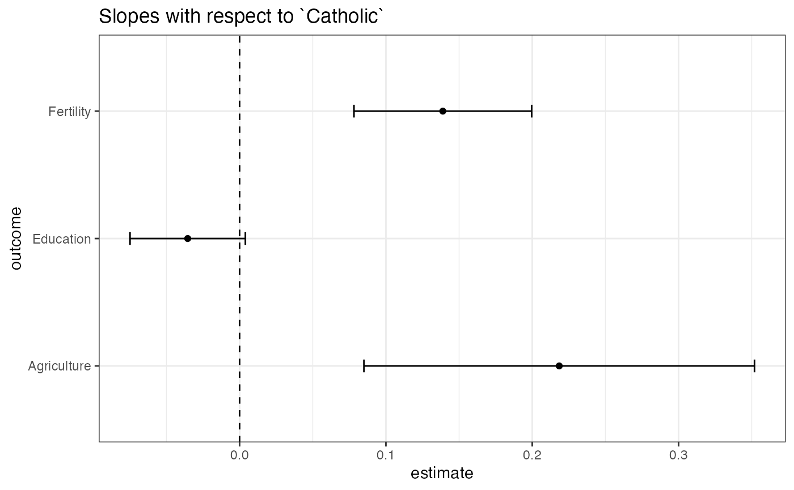

estimatr in the Tidyverse
Shikhar Singh
Source:../vignettes/estimatr-in-the-tidyverse.Rmd
estimatr-in-the-tidyverse.Rmdestimatr is for (fast) OLS and IV regression with robust standard errors. This document shows how estimatr integrates with RStudio’s tidyverse suite of packages.
We use the Swiss Fertility and Socioeconomic Indicators data (available in R, description here) to show how lm_robust works with dplyr, ggplot2, and purrr. What is shown for lm_robust here typically applies to all the other estimatr functions (lm_robust, difference_in_mean, lm_lin, iv_robust, and horovitz_thompson).
Getting tidy
The first step to the tidyverse is turning model output into data we can manipulate. The tidy function converts an lm_robust object into a data.frame.
## term estimate std.error statistic p.value conf.low
## 1 (Intercept) 59.8639237 5.47384281 10.936361 3.934173e-14 48.83211840
## 2 Agriculture 0.1095281 0.10305115 1.062852 2.936478e-01 -0.09815783
## 3 Catholic 0.1149621 0.03854836 2.982283 4.651169e-03 0.03727301
## conf.high df outcome
## 1 70.8957290 44 Fertility
## 2 0.3172141 44 Fertility
## 3 0.1926512 44 FertilityData manipulation with dplyr
Once a regression fit is a data.frame, you can use any of the dplyr “verbs” for data manipulation, like mutate,filter, select, summarise, group_by, and arrange (more on this here).
## term estimate std.error statistic p.value conf.low conf.high df
## 1 Agriculture 0.1095281 0.1030511 1.062852 0.2936478 -0.09815783 0.3172141 44
## outcome
## 1 Fertility## term estimate std.error
## 1 (Intercept) 59.8639237 5.47384281
## 2 Agriculture 0.1095281 0.10305115
## 3 Catholic 0.1149621 0.03854836
# lm_robust and mutate
fit %>% tidy %>% mutate(t_stat = estimate/ std.error,
significant = p.value <= 0.05)## term estimate std.error statistic p.value conf.low
## 1 (Intercept) 59.8639237 5.47384281 10.936361 3.934173e-14 48.83211840
## 2 Agriculture 0.1095281 0.10305115 1.062852 2.936478e-01 -0.09815783
## 3 Catholic 0.1149621 0.03854836 2.982283 4.651169e-03 0.03727301
## conf.high df outcome t_stat significant
## 1 70.8957290 44 Fertility 10.936361 TRUE
## 2 0.3172141 44 Fertility 1.062852 FALSE
## 3 0.1926512 44 Fertility 2.982283 TRUEData visualization with ggplot2
ggplot2 offers a number of data visualization tools that are compatible with estimatr
- Make a coefficient plot:
fit %>%
tidy %>%
filter(term != "(Intercept)") %>%
ggplot(aes(y = term, x = estimate)) +
geom_vline(xintercept = 0, linetype = 2) +
geom_point() +
geom_errorbarh(aes(xmin = conf.low, xmax = conf.high, height = 0.1)) +
theme_bw()- Put CIs based on robust variance estimates (rather than the “classical” variance estimates) with the
geom_smoothandstat_smoothfunctions.
library(ggplot2)
ggplot(swiss, aes(x = Agriculture, y = Fertility)) +
geom_point() +
geom_smooth(method = "lm_robust") +
theme_bw()Note that the functional form can include polynomials. For instance, if the model is \(Fertility \sim Agriculture + Agriculture^2 + Agriculture^3\), we can model this in the following way:
library(ggplot2)
ggplot(swiss, aes(x = Agriculture, y = Fertility)) +
geom_point() +
geom_smooth(method = "lm_robust",
formula = y ~ poly(x, 3, raw = TRUE)) +
theme_bw()
Bootstrap using rsample
The rsample pacakage provides tools for bootstrapping:
library(rsample)
boot_out <-
bootstraps(data = swiss, 500)$splits %>%
map(~ lm_robust(Fertility ~ Catholic + Agriculture, data = analysis(.))) %>%
map(tidy) %>%
bind_rows(.id = "bootstrap_replicate")
kable(head(boot_out))| bootstrap_replicate | term | estimate | std.error | statistic | p.value | conf.low | conf.high | df | outcome |
|---|---|---|---|---|---|---|---|---|---|
| 1 | (Intercept) | 57.6064665 | 5.8897920 | 9.7807301 | 0.0000000 | 45.7363706 | 69.4765624 | 44 | Fertility |
| 1 | Catholic | 0.0498515 | 0.0465977 | 1.0698268 | 0.2905311 | -0.0440600 | 0.1437630 | 44 | Fertility |
| 1 | Agriculture | 0.1687645 | 0.1142810 | 1.4767508 | 0.1468644 | -0.0615537 | 0.3990827 | 44 | Fertility |
| 2 | (Intercept) | 65.6018867 | 2.8228854 | 23.2393023 | 0.0000000 | 59.9127350 | 71.2910384 | 44 | Fertility |
| 2 | Catholic | 0.1567465 | 0.0261062 | 6.0041876 | 0.0000003 | 0.1041329 | 0.2093601 | 44 | Fertility |
| 2 | Agriculture | 0.0016789 | 0.0450155 | 0.0372965 | 0.9704173 | -0.0890439 | 0.0924018 | 44 | Fertility |
boot_out is a data.frame that contains estimates from each boostrapped sample. We can then use dplyr functions to summarize the bootstraps, tidyr functions to reshape the estimates, and GGally::ggpairs to visualize them.
## # A tibble: 3 × 2
## term boot_se
## <chr> <dbl>
## 1 (Intercept) 5.64
## 2 Agriculture 0.104
## 3 Catholic 0.0392
# To visualize the sampling distribution
library(GGally)
boot_out %>%
select(bootstrap_replicate, term, estimate) %>%
spread(key = term, value = estimate) %>%
select(-bootstrap_replicate) %>%
ggpairs(lower = list(continuous = wrap("points", alpha = 0.1))) +
theme_bw()
Multiple models using purrr
purrr provides tools to perform the same operation on every element of a vector. For instance, we may want to estimate a model on different subsets of data. We can use the map function to do this.
library(purrr)
# Running the same model for highly educated and less educated cantons/districts
two_subsets <-
swiss %>%
mutate(HighlyEducated = as.numeric(Education > 8)) %>%
split(.$HighlyEducated) %>%
map( ~ lm_robust(Fertility ~ Catholic, data = .)) %>%
map(tidy) %>%
bind_rows(.id = "HighlyEducated")
kable(two_subsets, digits =2)| HighlyEducated | term | estimate | std.error | statistic | p.value | conf.low | conf.high | df | outcome |
|---|---|---|---|---|---|---|---|---|---|
| 0 | (Intercept) | 68.41 | 1.89 | 36.27 | 0.00 | 64.50 | 72.31 | 23 | Fertility |
| 0 | Catholic | 0.14 | 0.03 | 4.20 | 0.00 | 0.07 | 0.20 | 23 | Fertility |
| 1 | (Intercept) | 62.41 | 2.63 | 23.74 | 0.00 | 56.93 | 67.89 | 20 | Fertility |
| 1 | Catholic | 0.06 | 0.08 | 0.71 | 0.48 | -0.11 | 0.23 | 20 | Fertility |
Alternatively, we might want to regress different dependent variables on the same independent variable. map can be used alongwith estimatr functions for this purpose as well.
three_outcomes <-
c("Fertility", "Education", "Agriculture") %>%
map(~ formula(paste0(., " ~ Catholic"))) %>%
map(~ lm_robust(., data = swiss)) %>%
map_df(tidy)
kable(three_outcomes, digits =2)| term | estimate | std.error | statistic | p.value | conf.low | conf.high | df | outcome |
|---|---|---|---|---|---|---|---|---|
| (Intercept) | 64.43 | 1.78 | 36.11 | 0.00 | 60.83 | 68.02 | 45 | Fertility |
| Catholic | 0.14 | 0.03 | 4.61 | 0.00 | 0.08 | 0.20 | 45 | Fertility |
| (Intercept) | 12.44 | 1.73 | 7.20 | 0.00 | 8.96 | 15.92 | 45 | Education |
| Catholic | -0.04 | 0.02 | -1.81 | 0.08 | -0.07 | 0.00 | 45 | Education |
| (Intercept) | 41.67 | 4.46 | 9.35 | 0.00 | 32.69 | 50.65 | 45 | Agriculture |
| Catholic | 0.22 | 0.07 | 3.30 | 0.00 | 0.08 | 0.35 | 45 | Agriculture |
Using ggplot2, we can make a coefficient plot:
three_outcomes %>%
filter(term == "Catholic") %>%
ggplot(aes(x = estimate, y = outcome)) +
geom_vline(xintercept = 0, linetype = 2) +
geom_point() +
geom_errorbarh(aes(xmin = conf.low, xmax = conf.high, height = 0.1)) +
ggtitle("Slopes with respect to `Catholic`") +
theme_bw()